pacman::p_load(tidyverse,readxl,corrplot,data.table,lubridate,ggthemes,gridExtra,
scales,viridis,knitr,ggridges, patchwork)Exploratory and Confirmatory Analysis of Singapore’s Trade with Key Partners
1 Overview
The dataset used in this study contains Singapore’s trade values with its major trading partners from January 2005 to January 2026. The original data source provides the top 10 countries for Singapore’s imports and the top 10 countries for Singapore’s exports. By comparing these two lists, eight countries appear in both rankings. These overlapping countries represent Singapore’s most important trading partners, as they are significant in both import and export activities.
Therefore, this analysis focuses on these eight countries to explore Singapore’s strongest trade relationships. The dataset records monthly trade values for each country and categorises them into imports and exports. The data is structured in a long format where each row represents a specific country, month, and trade category.
1.1 Install package
2 Data
2.1 Import data
data <- read_excel("data/data.xlsx")2.2 Data Preparation
The dataset was first cleaned and transformed in R to prepare it for analysis. A new date variable was created by combining the year and month fields, with the first day of each month used as the reference date. This ensured that the dataset could be analysed as a monthly time series and arranged in chronological order.
Next, the dataset was reshaped from long format to wide format using pivot_wider(), where import and export values were stored in separate columns. This transformation made it easier to compare the two trade flows directly.
Two additional derived variables were then created. trade_balance was calculated as exports minus imports, representing whether Singapore had a trade surplus or deficit with each country. trade_total was calculated as the sum of exports and imports, representing the overall trade volume. Finally, the year was extracted from the date variable to support yearly analysis and trend visualisation.
df_clean <- data %>%
mutate(date = make_date(year, month, 1)) %>%
arrange(date)
df_wide <- df_clean %>%
pivot_wider(names_from = category, values_from = total) %>%
mutate(
trade_balance = export - import, #贸易顺差
trade_total = export + import, #贸易总额
year = year(date)
)3 Exploratory Data Analysis
3.1 Overall Trade Trends
3.1.1 Singapore’s Total Trade with 8 Key Partners Over Time
To provide an overview of Singapore’s trade relationship with its key partners, a line chart was used to visualise the total trade value over time. In this visualisation, the trade values of the eight selected countries were aggregated by month to show the overall trade pattern from 2005 to 2026.
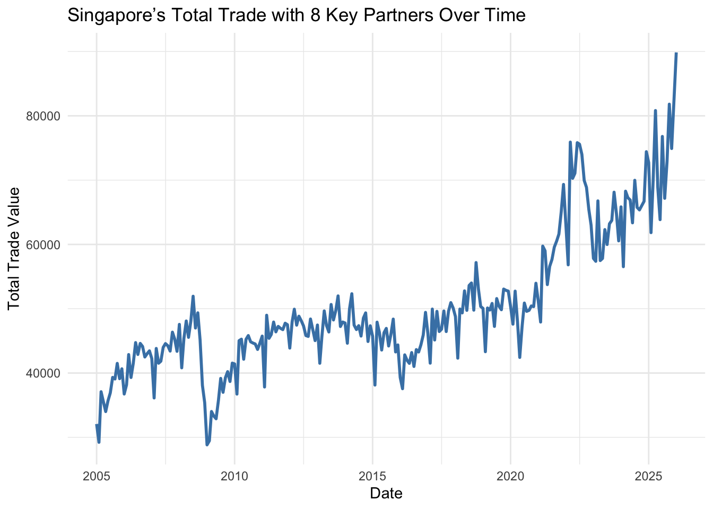
#1 Overall Trade Total Trend
df_total <- df_clean %>%
group_by(date) %>%
summarise(trade_total = sum(total, na.rm = TRUE))
ggplot(df_total,
aes(x = date, y = trade_total)) +
geom_line(color = "steelblue", linewidth = 1) +
labs(
title = "Singapore’s Total Trade with 8 Key Partners Over Time",
x = "Date",
y = "Total Trade Value"
) +
theme_minimal()The chart shows that total trade generally increased over the study period, although several fluctuations can be observed. A noticeable decline appears around 2008–2009, followed by a recovery and relatively stable growth in later years. From around 2021 onward, the upward trend becomes stronger, with trade reaching its highest levels near 2025–2026.
A minimal theme and a single colour were used to reduce visual clutter and emphasise the overall trend, improving readability and interpretability.
3.1.2 Singapore’s Imports and Exports with 8 Key Trading Partners
A two-line chart was used to compare import and export values over time, as it is effective for showing differences between two time-series variables.
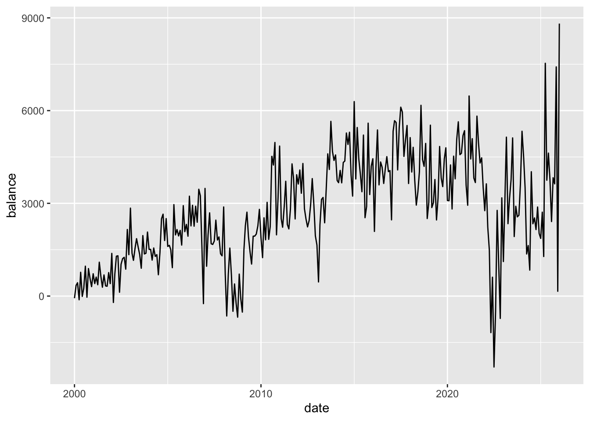
#| echo: true
#| eval: false
# 2 input output trend
df_clean %>%
group_by(date, category) %>%
summarise(total = sum(total)) %>%
ggplot(aes(date, total, color = category)) +
geom_line()+
labs(
title = "Singapore’s Imports and Exports with 8 Key Trading Partners",
x = "Date",
y = "Total Trade Value"
) +
theme_minimal()`summarise()` has regrouped the output.
ℹ Summaries were computed grouped by date and category.
ℹ Output is grouped by date.
ℹ Use `summarise(.groups = "drop_last")` to silence this message.
ℹ Use `summarise(.by = c(date, category))` for per-operation grouping
(`?dplyr::dplyr_by`) instead.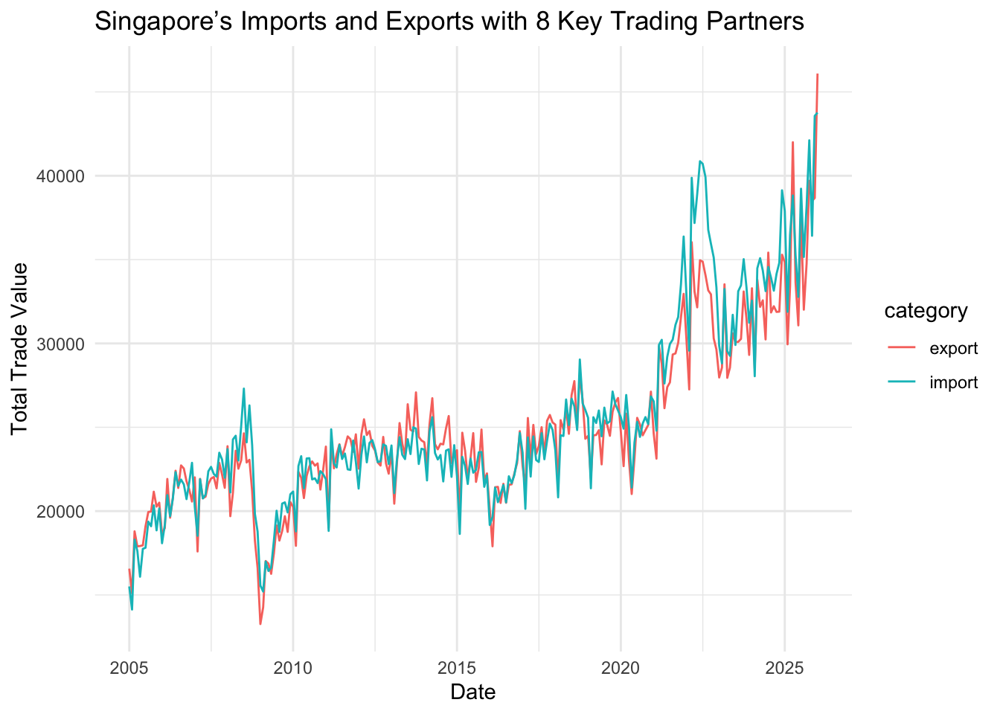
The chart shows that both imports and exports generally followed a similar upward trend from 2005 to 2026, with several short-term fluctuations. A noticeable decline appears around 2008–2009, followed by recovery in the subsequent years. In most periods, the two lines remain close to each other, suggesting that Singapore’s trade flows with these eight countries were relatively balanced, although imports and exports alternated in being slightly higher at different times.
Different colours were used to distinguish the two trade categories, while a minimal theme improved clarity and readability.
3.1.3 Singapore’s Trade Balance with 8 Key Trading Partners Over Time
The chart shows how Singapore’s trade balance with the eight selected partners changed between 2005 and 2026. The dashed horizontal line represents the zero level, separating periods of trade surplus and deficit. In the earlier years, the balance fluctuates around zero with several short periods of surplus. Around 2008–2009, a noticeable drop appears, indicating a temporary trade deficit. After 2020, the fluctuations become larger and the balance turns strongly negative at several points, suggesting that imports exceeded exports more significantly during this period.
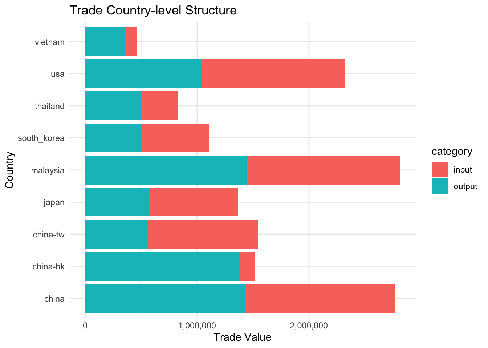
df_wide %>%
group_by(date) %>%
summarise(balance = sum(trade_balance), .groups = "drop") %>%
ggplot(aes(x = date, y = balance)) +
geom_line(linewidth = 0.5, color = "black") +
geom_hline(yintercept = 0, linetype = "dashed", color = "red") +
labs(
title = "Singapore's Trade Balance with 8 Key Trading Partners Over Time",
x = "Date",
y = "Trade Balance"
) +
theme_minimal()3.2 Country-Level Trade Structure
While the previous section examined Singapore’s overall trade trends, it is also important to look at how trade is distributed across individual partners. The following analysis focuses on country-level patterns to better understand the relative importance and structure of Singapore’s trade relationships with the eight selected economies.
# A tibble: 8 × 2
country total_trade
<chr> <dbl>
1 china 2601373.
2 malaysia 2412839.
3 usa 1976567
4 china-tw 1422820
5 Indonesia 1417101.
6 japan 1123366.
7 south_korea 1013622.
8 thailand 721145.#4 top trading partners
df_clean %>%
group_by(country) %>%
summarise(total_trade = sum(total)) %>%
arrange(desc(total_trade))3.2.1 Country-level Structure
The stacked bar chart further illustrates the structure of imports and exports for each country. China and Malaysia show the largest total trade values, with both imports and exports contributing substantially. In contrast, countries such as Thailand and South Korea account for relatively smaller trade volumes.
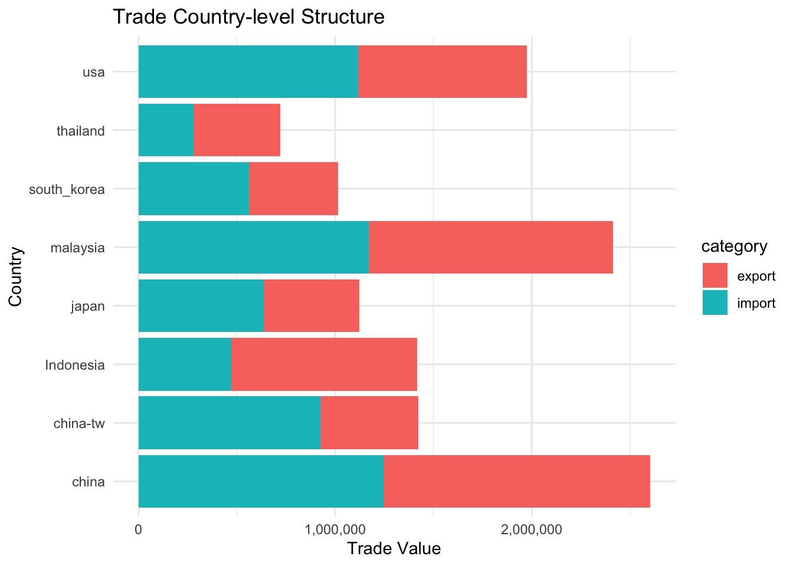
#5 trade country-level structure
ggplot(df_clean,
aes(country, total, fill = category)) +
geom_bar(stat = "identity") +
coord_flip() +
scale_y_continuous(labels = comma) +
labs(
title = "Trade Country-level Structure",
x = "Country",
y = "Trade Value"
) +
theme_minimal()Observation：
Differences in the composition of trade can also be observed. For example, exports appear to dominate Singapore’s trade with Indonesia and Thailand, while trade with countries such as China and Malaysia is more balanced between imports and exports.
3.2.2 Country-level Import vs Export Trend
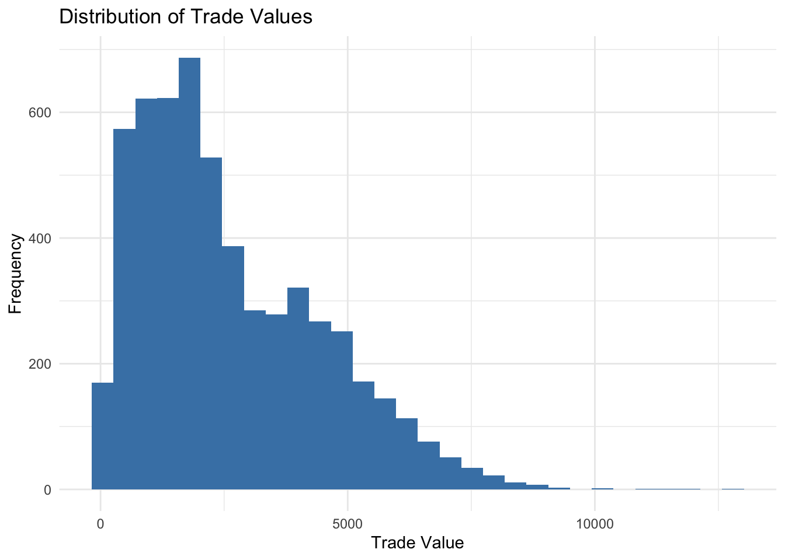
#6 country-level input vs output trend
ggplot(df_clean, aes(x = date, y = total, color = country)) +
geom_line(alpha = 0.7) +
facet_wrap(~category, scales = "free_y") +
theme_minimal() +
labs(title = "Singapore Trade Trends by Country", y = "Trade Value")The country-level trends show that trade with China, Malaysia, and the United States consistently records the highest values across the period. Most countries display a gradual upward trend, especially after 2020. In contrast, trade with Thailand and South Korea remains relatively smaller, although both also show moderate growth toward the end of the period.
3.2.3 Country-level Trade Balance Trend
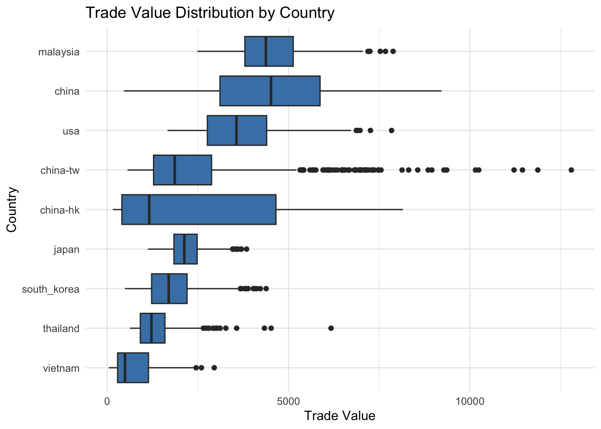
#7 country-level trade balance trend
df_wide_plot <- df_wide %>%
mutate(month = factor(month(date), levels = 1:12))
ggplot(df_wide_plot, aes(x = month, y = trade_balance, group = year)) +
geom_line(aes(color = year), alpha = 0.3) +
geom_hline(yintercept = 0, linetype = "dashed", color = "red") +
facet_wrap(~country) +
scale_color_viridis_c() +
theme_tufte() +
labs(title = "Monthly Variation in Trade Balance",
subtitle = "Export minus import",
x = "Month", y = "Trade Balance")The monthly patterns show noticeable differences across countries. Singapore tends to record consistent trade surpluses with Indonesia throughout the year, while trade with China–Taiwan remains mostly in deficit. For most of the other partners, the balance fluctuates around zero across different months, suggesting that imports and exports are relatively balanced without a strong monthly pattern.
3.3 Seasonal Trade Patterns
In addition to long-term trends and country-level differences, it is also useful to examine whether Singapore’s trade shows any recurring monthly patterns. The following visualisations explore seasonal variations in imports and exports across the year.
3.3.1 Seasonal Pattern of Import and Export
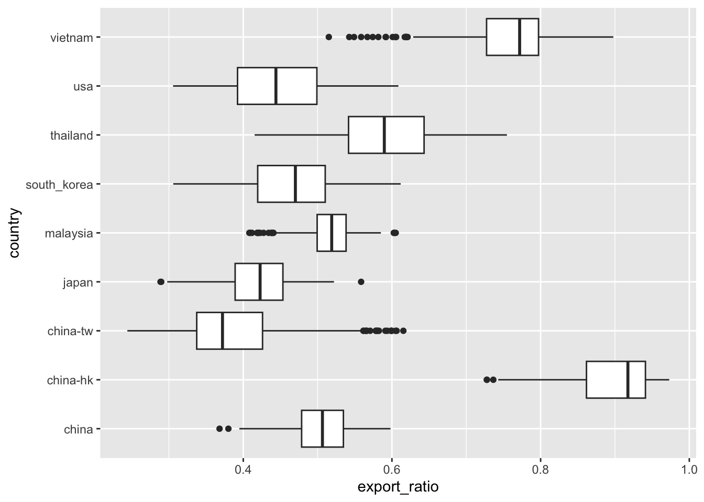
#8 Monthly seasonal pattern
season_month <- df_clean %>%
mutate(month = factor(month(date), levels = 1:12)) %>%
group_by(month, category) %>%
summarise(avg_trade = mean(total, na.rm = TRUE))
ggplot(season_month,
aes(month, avg_trade, color = category, group = category)) +
geom_line(linewidth = 1) +
geom_point(size = 2) +
labs(
title = "Seasonal Pattern of Import and Export",
x = "Month",
y = "Average Trade Value"
) +
theme_minimal()The average monthly pattern shows that imports and exports follow a broadly similar trend throughout the year. Trade values drop noticeably in February, before rising again in March. From mid-year onward, both imports and exports remain relatively stable, with slightly higher levels toward the end of the year. Overall, the seasonal variation appears moderate rather than extreme.
3.3.2 Seasonal Trade Heatmap
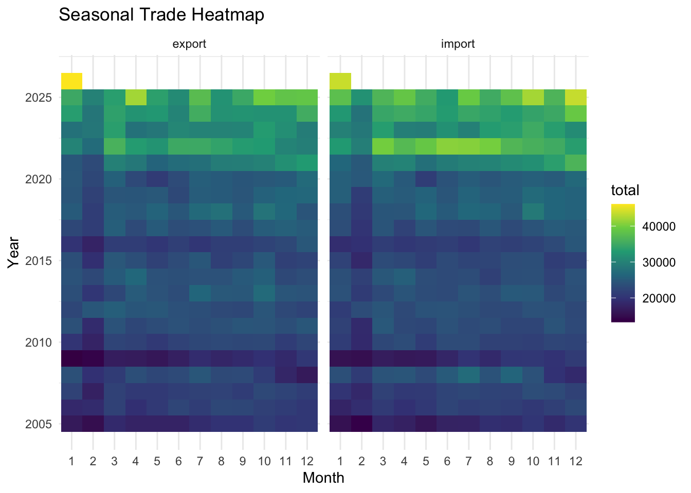
#9 seasonal heatmap
season_heat <- df_clean %>%
mutate(month = factor(month(date), levels = 1:12)) %>%
group_by(year, month, category) %>%
summarise(total = sum(total, na.rm = TRUE))
ggplot(season_heat,
aes(month, year, fill = total)) +
geom_tile() +
facet_wrap(~category) +
scale_fill_viridis_c() +
labs(
title = "Seasonal Trade Heatmap",
x = "Month",
y = "Year"
) +
theme_minimal()The heatmap highlights how monthly trade levels change across different years. A clear upward shift in colour intensity can be seen over time, reflecting the overall growth in trade. While some months occasionally record higher activity, there is no single month that consistently dominates across all years, suggesting that long-term growth plays a larger role than strict seasonal cycles.
3.3.3 Seasonal Trade Pattern with Variation Range
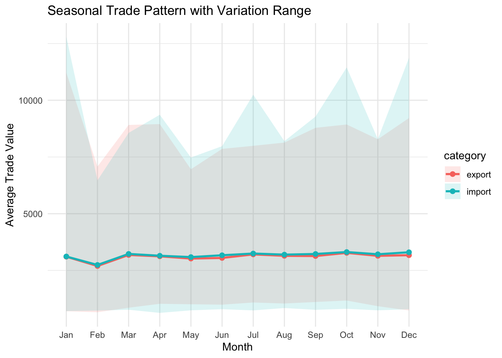
#10 seasonal ribbon plot
season_ribbon <- df_clean %>%
mutate(month = factor(month(date), levels = 1:12, labels = month.abb)) %>%
group_by(month, category) %>%
summarise(
avg_trade = mean(total, na.rm = TRUE),
min_trade = min(total, na.rm = TRUE),
max_trade = max(total, na.rm = TRUE),
.groups = "drop"
)
ggplot(season_ribbon,
aes(x = month, y = avg_trade,
color = category, fill = category,
group = category)) +
geom_ribbon(aes(ymin = min_trade, ymax = max_trade),
alpha = 0.15, colour = NA) +
geom_line(linewidth = 1) +
geom_point(size = 2) +
labs(
title = "Seasonal Trade Pattern with Variation Range",
x = "Month",
y = "Average Trade Value"
) +
theme_minimal()The ribbon plot shows both the average trade level and the variation range across months. Although the monthly averages are relatively stable, the shaded areas indicate that variability differs across the year. In particular, some months toward the end of the year display wider ranges, suggesting that trade activity during these months fluctuates more across different years.
3.4 EDA Summary
In summary, Singapore’s trade with the selected partners shows an overall upward trend with noticeable fluctuations over time. Trade is concentrated among a few key partners, particularly China, Malaysia, and the United States. Seasonal patterns exist but appear relatively moderate, indicating that long-term growth and country-level differences play a more important role in shaping trade dynamics.
4 Confirmatory Data Analysis
Building on the exploratory findings, confirmatory data analysis is conducted to test several statistical relationships in the data, including differences between imports and exports, variations across countries, changes in trade balance over time, differences in trade structure, and monthly variations in trade values.
4.1 Comparison of Import and Export Trade Values
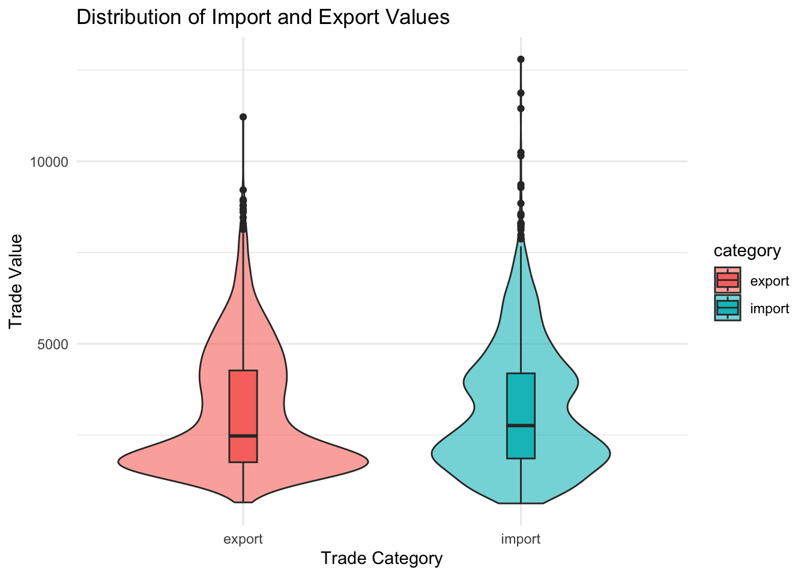
#H0: Import and export values are the same
#H1: Import and export values differ
ggplot(df_clean,
aes(category, total, fill = category)) +
geom_violin(alpha = 0.6) +
geom_boxplot(width = 0.1) +
labs(
title = "Distribution of Import and Export Values",
x = "Trade Category",
y = "Trade Value"
) +
theme_minimal()Import and export values show broadly similar distributions, with most observations concentrated at lower trade levels and a number of higher-value outliers. Imports appear to have a slightly higher median and wider upper range, suggesting that import values may be somewhat larger on average. A statistical test is therefore conducted to determine whether this difference is significant.
4.2 Comparison of Trade Values Across Countries
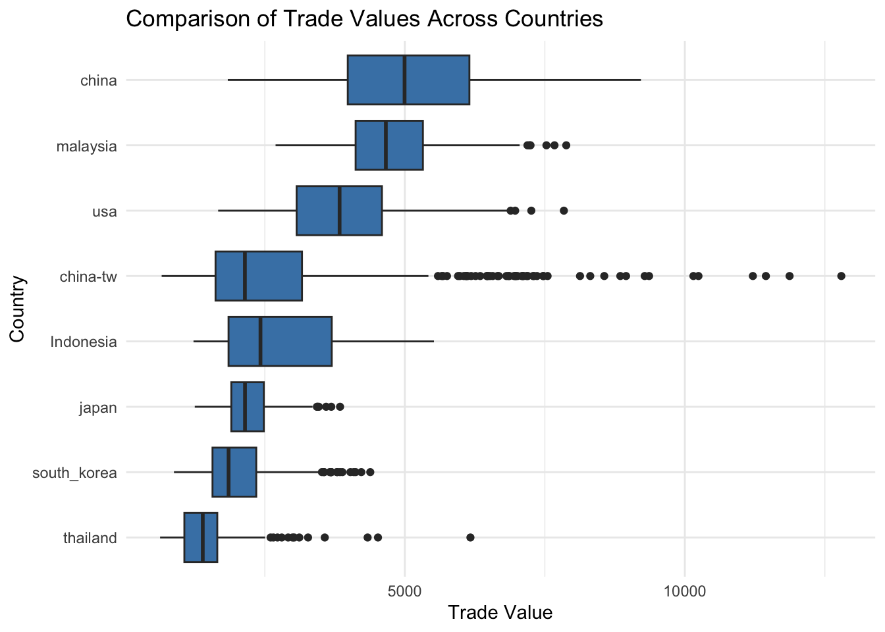
#H0: Trade values are equal across countries
#H1: Trade values differ across countries
ggplot(df_clean,
aes(reorder(country, total), total)) +
geom_boxplot(fill = "steelblue") +
coord_flip() +
labs(
title = "Comparison of Trade Values Across Countries",
x = "Country",
y = "Trade Value"
) +
theme_minimal()Trade values vary noticeably across the eight countries. China and Malaysia show the highest median trade values and wider ranges, indicating larger trade volumes overall. In contrast, Thailand, Japan, and South Korea tend to have lower trade values. Several countries also display a number of high-value outliers, suggesting occasional spikes in trade activity. A statistical test is conducted to examine whether these differences are significant.
4.3 Trend in Trade Balance Over Time
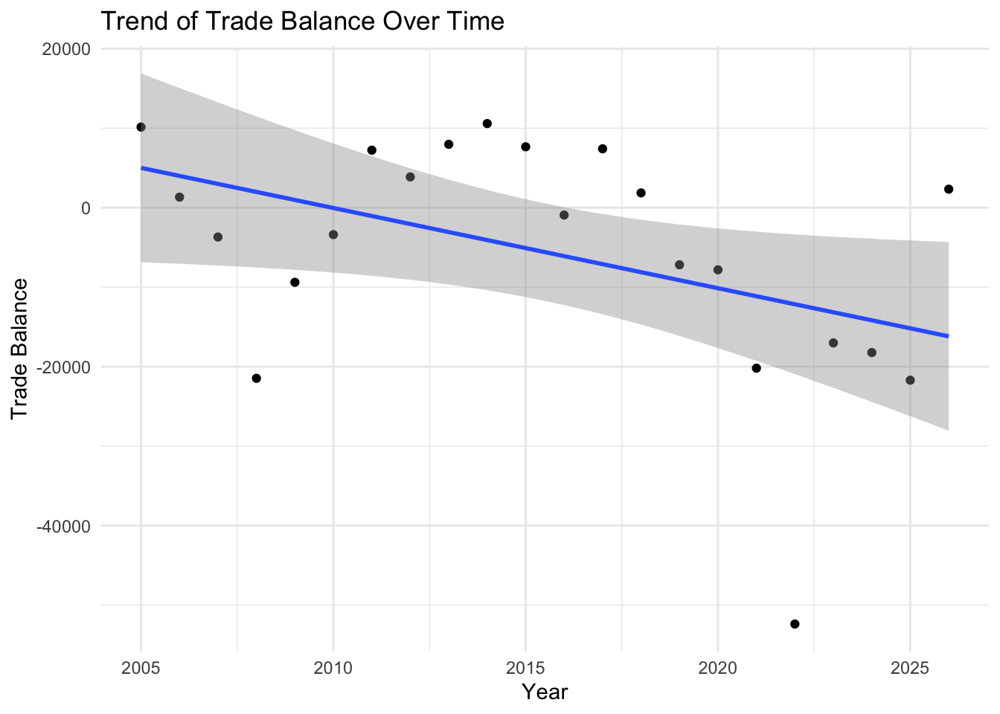

Trade balance fluctuates considerably across the years, but the fitted regression line suggests a gradual downward trend over time. In earlier years, the balance is closer to zero or slightly positive, while several later observations fall further into negative territory. This pattern indicates that trade deficits have become more common in recent years.
4.4 Differences in Trade Structure Across Countries
Df Sum Sq Mean Sq F value Pr(>F)
country 7 17.977 2.5682 1208 <2e-16 ***
Residuals 2016 4.285 0.0021
---
Signif. codes: 0 '***' 0.001 '**' 0.01 '*' 0.05 '.' 0.1 ' ' 1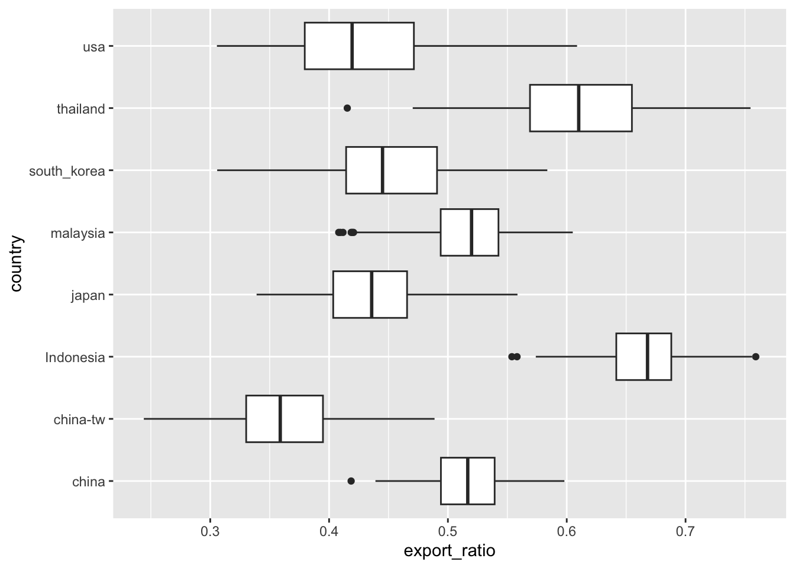
#国家之间贸易结构是否不同
df_wide <- df_wide %>%
mutate(export_ratio = export / trade_total)
anova_ratio <- aov(export_ratio ~ country, data = df_wide)
summary(anova_ratio)
ggplot(df_wide, aes(country, export_ratio)) +
geom_boxplot() +
coord_flip()Export shares differ noticeably across countries. Indonesia and Thailand show relatively high export ratios, indicating that Singapore exports more than it imports with these partners. In contrast, China–Taiwan displays a lower export share, suggesting that imports account for a larger portion of trade. Other countries, such as China and Malaysia, appear closer to a balanced trade structure.
4.5 Monthly Differences in Trade Values
Df Sum Sq Mean Sq F value Pr(>F)
factor(month) 11 1.575e+08 14318529 1.485 0.13
Residuals 2012 1.941e+10 9645265 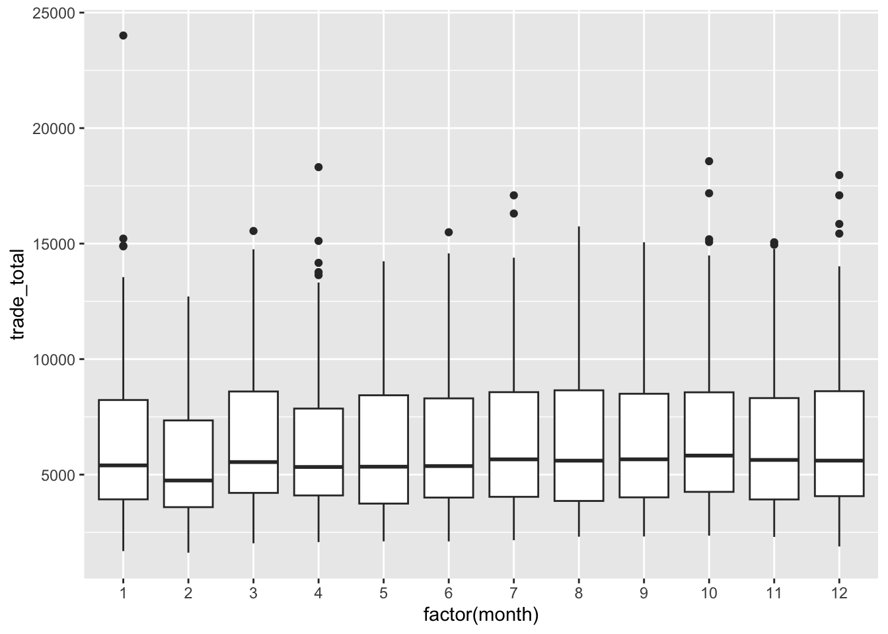
#Trade values vary significantly across months
anova_month <- aov(trade_total ~ factor(month), data = df_wide)
summary(anova_month)
ggplot(df_wide, aes(factor(month), trade_total)) +
geom_boxplot()Trade values show some variation across months, although the overall distributions appear relatively similar. Median trade values tend to be slightly higher in the later months of the year, while earlier months display somewhat lower values. A statistical test is conducted to determine whether these differences are significant.
4.6 CDA Summary
Overall, the confirmatory analysis supports several patterns observed in the exploratory analysis. Trade values differ across countries and months, indicating variations in trade scale and timing. Differences in export shares also suggest that trade structures vary between partners. In addition, the results indicate that trade balance has changed over time, reflecting evolving trade dynamics.
5 UI Design
5.1 Motivation
Trade relationships between countries can be complex and change over time. By using interactive visualizations, users are able to explore patterns and better understand how trade evolves across different partners and periods.
In this project, an interactive dashboard is proposed to help users explore Singapore’s trade with its key trading partners. Instead of only presenting static charts, the dashboard allows users to interact with the data by selecting countries and adjusting the time period. This makes it easier to observe trade trends, compare countries, and identify possible seasonal patterns in trade activities.
5.2 Methodology
To better explore and analyse Singapore’s trade with its key trading partners, this project proposes the design of an interactive web application built using a Shiny dashboard. The main objective of this application is to allow users to visually explore trade trends, country differences, and seasonal variations through interactive charts and filtering options.
When designing the dashboard, three main questions were considered:
What data are users interested in analysing?
How should users interact with the data?
How can the results be presented in a way that is easy to understand?
Based on these considerations, the dashboard is designed with five main pages, representing different stages of the analysis. The first few pages focus on Exploratory Data Analysis (EDA), where users can visually explore patterns and trends in the data. The later pages present Confirmatory Data Analysis (CDA), where statistical methods are used to test whether the observed patterns are statistically significant.
5.3 Storyboard
The proposed web application dashboard is organised into several sections to guide users through the analysis process. Each section focuses on a different aspect of the trade data and contains interactive filters that allow users to adjust the data being displayed.
Users can select one or multiple countries to analyse and adjust the time period using a year range slider. By dragging the slider bar, users can easily focus on a specific time range for the analysis.
The dashboard consists of the following sections:
Overview
Country-Level Analysis
Seasonal Analysis
Trade Comparison Tests
Trend and Seasonal Tests
These sections allow users to first explore the data visually and then examine the statistical evidence supporting those patterns.
5.3.1 Section One (Overview)
In the Overview section, users are able to obtain a general understanding of Singapore’s overall trade performance. This page provides a summary of the key trade indicators together with the overall trade trend.
Users can filter the data by selecting specific countries and adjusting the time period using the year range slider. The slider allows users to drag the bar to select the desired time range.
At the top of the page, several KPI indicators are displayed, including total trade value, total exports, total imports, and trade balance. These indicators provide a quick summary of the current trade situation.
Below the indicators, line charts are used to show the total trade trend as well as a comparison between import and export values over time. These charts help users observe how Singapore’s trade activities change over different periods.
5.3.2 Section Two (Country-Level Analysis)
In the Country-Level Analysis section, users are able to explore the differences in trade across Singapore’s major trading partners.
Users can select specific countries and adjust the time range using the filter panel. This allows them to compare trade patterns between different countries.
The page includes several charts that show the trade ranking of countries, the structure of imports and exports, and the trade trends of individual countries over time. Through these visualisations, users can identify which countries have the largest trade volumes and observe how trade relationships evolve over time.
5.3.3 Section Three (Seasonal Analysis)
In the Seasonal Analysis section, users can explore whether trade activities show any seasonal patterns across different months.
Users are able to filter the dataset by country and adjust the time range using the year slider. This allows them to observe whether seasonal patterns are consistent across different countries or years.
The charts in this section include a monthly trade trend, a seasonal heatmap, and a variation range plot. These visualisations help users identify months with higher or lower trade activity and observe possible seasonal fluctuations.
5.3.4 Section Four (Trade Comparison Tests)
In the Trade Comparison Tests section, users are able to view statistical comparisons between different trade categories and countries.
This page includes distribution charts such as violin plots and boxplots to compare import and export values. These visualisations allow users to observe how the distributions differ between the two categories.
In addition, boxplots are used to compare trade values across different countries. The results of statistical tests are also presented to help users determine whether the differences observed in the charts are statistically significant.
5.3.5 Section Five (Trend and Seasonal Tests)
The Trend and Seasonal Tests section focuses on statistical tests related to time trends and monthly differences.
In this page, users can view a scatter plot showing the trend of trade balance over time, together with a regression line that indicates the overall direction of the trend.
Another chart compares trade values across different months using boxplots. These visualisations help users observe whether certain months tend to have higher or lower trade activity.
Statistical results are also presented to examine whether the trend over time and the differences across months are significant.